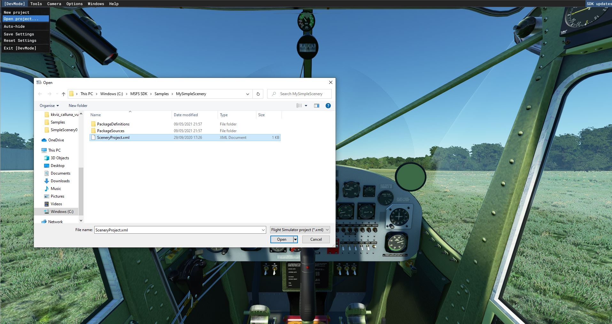
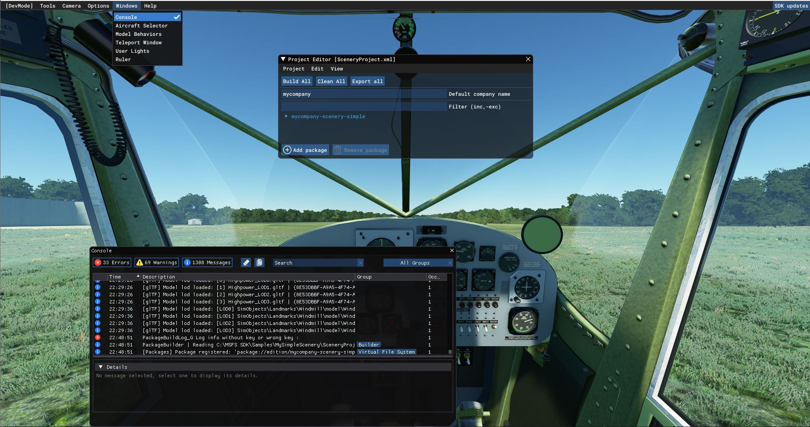
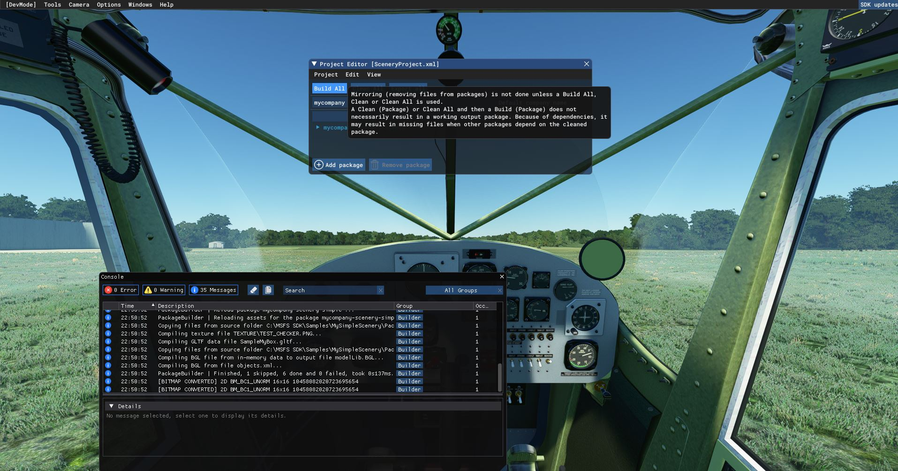
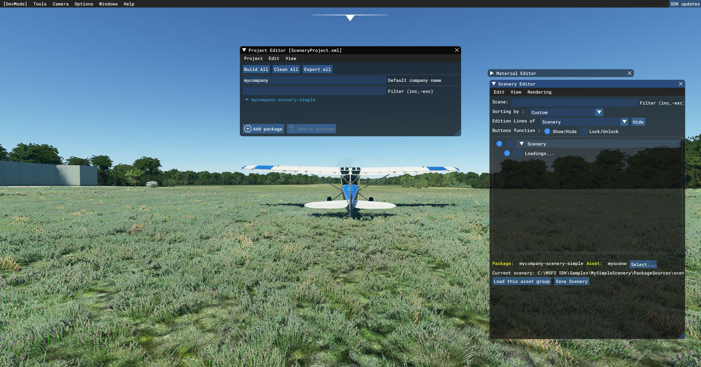

How to open a scenery project and show it
 Now, open the project in MSFS,
Now, open the project in MSFS,

Make sure you open the console,

.. and CLEAR the console,

Then click Project - Build

.. and check the console. If it shows errors, clear it again and Project - Build, the console should have 0 errors.
Then, open the Scenery editor via Menu Tools Scenery Editor,

When it is enabled, click Load this assset, else use Select to select the Asset.

.. the scenery is loading.. WAIT for this.. when it is finished,